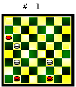
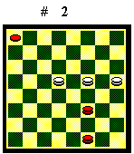
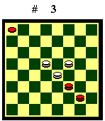
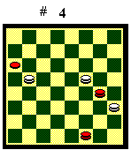
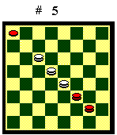
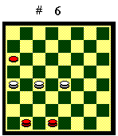

TRE DAME CONTRO DUE DAME E UNA PEDINA
Il finale di tre dame contro due dame e una pedina, come tutti i finali in cui, oltre alle dame, sono presenti delle pedine, presenta una casistica piuttosto articolata. Ho preso in considerazione solo le posizioni più frequenti in gioco vivo, cioè quelle in cui il Nero ha le dame presso la base inferiore, con le dame bianche che le fronteggiano e impediscono l'avanzata della pedina ferma su un lato.

Se il Nero disunisce le dame e ne porta una nel biscacco inferiore, mentre l'altra è chiusa a lato, in posizioni del tipo di quella del Diagramma 1, il Bianco vince:
|
|
|
|
|
|
|
Se il Nero ha le dame unite, patta:
|
|
|
|
Ho indicato esplicitamente solo le linee di gioco per pedina in 1, 2 o 9, mossa al Nero e dame nere nel cantone, poiché gli altri casi richiedono una condotta di gioco semplice. Infine ho riportato la posizione Johnson, che è utile conoscere.
Pedina in 1, 2 o 9, mossa al Nero,
dame nere nel cantone
Il Bianco per vincere deve spingere le dame nere
sulla base, cercando sia di chiuderle per poi forzare un cambio, sia di
disunirle. Ma è limitato nella manovra perché deve impedire
la fuga della pedina ed evitare che una dama nera raggiunga il biscacco
superiore, perché impatta. Il Bianco può attuare sia l'attacco
a dame unite che l'aggiramento. In entrambi i casi il Nero riesce a respingerlo,
ma deve giocare con molta attenzione perché può incappare
in posizioni apparentemente sicure, ma perdenti. Riporto il caso di pedina
in 1, ma le linee di gioco sono le stesse anche se la pedina è in
2 o in 9.

Per capire questo finale piuttosto complesso, è opportuno riportare prima le manovre vincenti del Bianco.Diagramma 2. Il Bianco muove: 1.31-28 (A) 2.15-19 23-27 (se 1-5, 14-10 Bv. Il Nero deve indietreggiare le dame e cedere la casa 23) 3.16-20 28-24 (se 1-5, 20-24, 27-31, 14-10, 5-9, 10-13 Bv) 4.19-15 24-28 (B) 5.20-24 28-31 (se 27-31, 15-19 ecc. Bv) 6.15-19 27-30 7.14-18 30-26 8.18-22 (19-23?, 26-22 pari) 26-30 9.19-23 1-5 10.24-20 5-9 11.20-16 9-13 12.22-18 13-17 13.18-21 31-27 14.21-25 27x20 15.16x23 30-26 16.23-19 (23-27?, 17-21, X, 26-22 pari) 26-29 17.19-22 il Bianco vince.
(A) - 1.1-5 2.15-19 23-28 (se 31-28, 14-10 Bv. Il Nero deve indietreggiare le dame e cedere la casa 23) 3.14-10 (se 16-20?, 5-10, X, 28-23 Nv) 5-9 4.10-13 28-32 5.16-20 31-28 6.20-23 28-31 7.13-10 31-28 8.19-14 il Bianco vince.
(B) - 4.1-5 5.14-10 5-9 6.10-13 24-28 7.15-19 28-24 8.20-16 27-30 9.19-22 ecc. Il Bianco vince.
E' importante notare che sarebbe
possibile la stessa manovra vincente anche se la dama nera nella casa 31
fosse in 24, ma non se fosse in 22.

Se il Bianco attacca a dame unite, il Nero, per non essere schiacciato sulla base e chiuso, deve mantenere il possesso della casa 23, altrimenti perde.Diagramma 3. Il Nero muove:
1.23-27 (se 1-5, 14-10 Bv. Il Nero deve indietreggiare le dame e cedere
la casa 23) 2.15-20 siamo nella linea vincente per il Bianco.

Se il Bianco aggira le dame nere, portando una dama in 24 per limitare la manovra avversaria, il Nero, per non essere schiacciato sulla base e chiuso, deve impedire che le altre due dame bianche si uniscano per manovrare insieme, altrimenti perde.Diagramma 4. Il Bianco muove:
1.15-11 20-23 (se 20-16, 11-7, 31-27, 24-28 il Nero divide le dame e perde)
2.11-14 (le due dame bianche unite forzano la vittoria) 31-27 3.13-18 27-31
4.18-22 23-27 (se 9-13, 22-19 ecc. Bv) 5.22-19 27-30 6.14-18 siamo nella
linea vincente per il Bianco.

Di seguito le linee di gioco corrette:Diagramma 5. Il Bianco muove: 1.19-15 (il Bianco attacca a dame unite) 28-31 (se 23-27?, 14-19, 27-23, 10-14 il Nero è in posizione perdente) 2.10-5 31-27 3.15-19 23-28 4.14-11 27-23 5.19-15 28-31 6.11-7 31-27 7.7-12 27-22 8.12-16 22-27 9.5-10 27-22 (se 27-31?, 10-14 il Nero è in posizione perdente) 10.10-14 1-5 (se 22-27?, 15-19, 23-28, 16-20 il Nero è nella linea di gioco perdente) 11.14-10 5-9 12.10-14 22-27 13.15-19 (A) 23-28 14.16-20 28-24 (se 9-13?, 20-24, 27-31 le dame nere sono legate e Bv. Se 28-31?, 24-20, 27-30, 14-18 il Nero è nella linea di gioco perdente) 15.20-15 (se 19-15, 9-13 il Nero avanza la pedina) 24-28 (se 9-13?, 15-11, 27-30, 19-22, 24-28, 14-18, 13-17, 11-14, 28-31, 22-26 Bv) 16.14-18 27-23 17.19-14 28-31 18.14-11 31-28 19.11-7 28-31 20.7-12 31-27 21.12-16 27-31 22.15-20 31-27 23.20-24 (il Bianco aggira le dame nere) 27-31 24.16-12 (se 18-14, 9-13) 23-19 (impedisce che le due dame bianche si uniscano) 25.18-13 31-27 26.24-28 27-31 27.28-32 31-27 28.13-10 27-31 il Bianco non può unire le due dame senza che la pedina fugga o che una dama nera raggiunga il biscacco superiore, e non può fare indietreggiare il Nero. Pari.
(A) - 13.14-18 23-28 (ottima anche
27-31, 18-22, 9-13, ecc.) 14.16-20 28-23 (se 28-24? [o 27-31?], 18-13,
24-28 [o 31-27], 15-19 il Nero è nella linea di gioco perdente)
15.20-24 27-31 (se 23-20?, 15-19, 20-16, 19-23 Bv) 16.18-13 31-27 (se 23-20?
il Nero è in posizione perdente) 17.13-18 27-31 18.18-14 23-20 (se
9-13?, 15-19 Bv. Se 23-27?, 15-19, 27-30, 14-18 il Nero è nella
linea di gioco perdente) 19.15-19 (se 15-11, 20-23, 14-18, 23-19 impedisce
che le due dame bianche si uniscano) 20-16 20.19-15 (impedisce che la dama
nera raggiunga il biscacco superiore) 16-20 21.15-12 20-23 il Bianco non
può fare indietreggiare il Nero. Pari.
Posizione Johnson

La Posizione Johnson si ha quando la pedina nera è nelle case 1, 2 o 9, le due dame nere sono nel biscacco inferiore e il Nero ha la mossa in favore. E' una estensione della Prima Posizione ed è proprio grazie alla minaccia di dare un cambio a una dama nera, invertire la mossa e vincere per Prima Posizione, che il Bianco riesce a obbligare la pedina ad avanzare in 9 e poi a forzare la vittoria.Il Bianco deve evitare che una dama nera conquisti la casa 17, perché i tre pezzi del Nero, adagiati sul lato, si appoggerebbero a vicenda e avendo la mossa in favore non potrebbero essere scalzati. Inoltre deve impedire che entrambe le dame nere fuggano nel cantone.
Diagramma 6. Il Bianco muove:
1.17-13 30-26 (se 29-26, 18-22, 26-29, 19-14 posizione alla mossa 9) 2.19-14
29-25 (se 26-30, 18-22 posizione alla mossa 9) 3.13-17 25-29 (se 26-30,
18-22, 25-29, 17-13 posizione alla mossa 9) 4.18-21 26-30 5.17-13 29-26
(se 30-27, 14-18, 27-30, 18-22 posizione alla mossa 11) 6.21-18 30-27 (se
29-26, 18-22 posizione alla mossa 9) 7.14-19 27-30 (se 27-31, 19-23 Bv)
8.18-22 26-29 9.19-14 (la posizione chiave) 29-25 (se 30-26, 13-10 Bv per
Prima Posizione) 10.14-18 25-29 11.18-21 29-25 12.22-19 25x18 13.13x22
9-13 14.19-14 13-17 15.14-18 il Bianco vince.